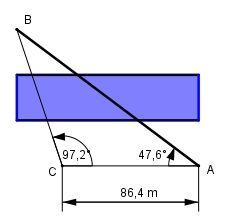

>Aufgabe 182 Zwischen zwei Punkten A und B liegt ein Bach. Ein Punkt C, der nicht auf AB liegt, ist von A 86,4 m entfernt. B wird von C aus unter 47,6° gegen den Uhrzeigersinn und von A aus unter 97,2° im Uhrzeigersinn angepeilt. Wie groß ist AB?

Winkel CBA = 180° - 47,6° - 97,2° = 35,2° Im Dreieck CAB: Fall SWW: Sinussatz: 86,4 m AB ------------ = ----------- | *sin 97,2° sin 35,2° sin 97,2° 86,4 m * sin 97,2° 86,4 m * 0,9921 AB = -------------------- = ------------------- = sin 35,2° 0,5764 = 148,7 m